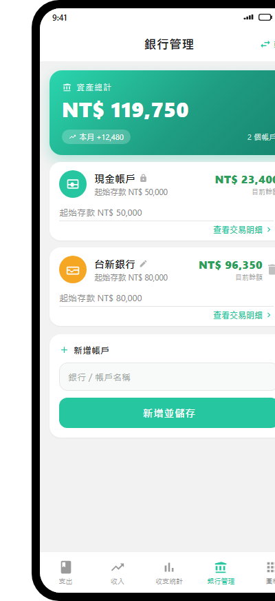
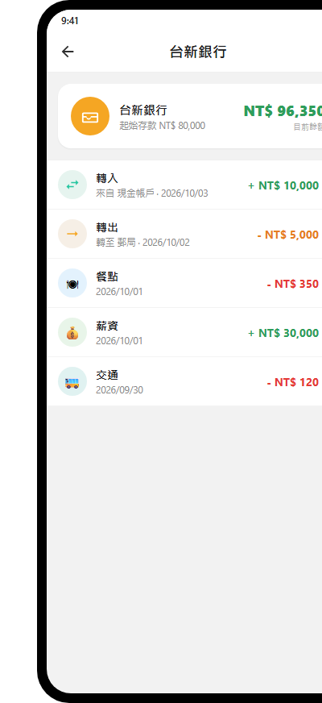
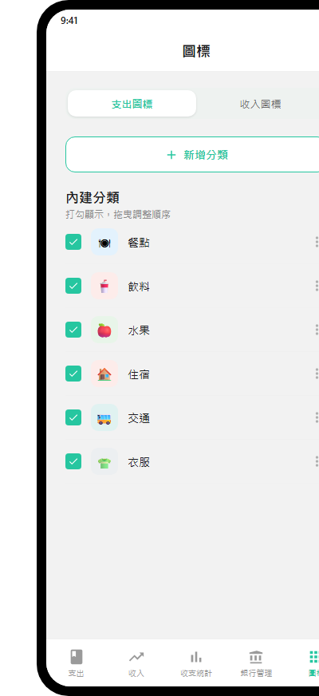
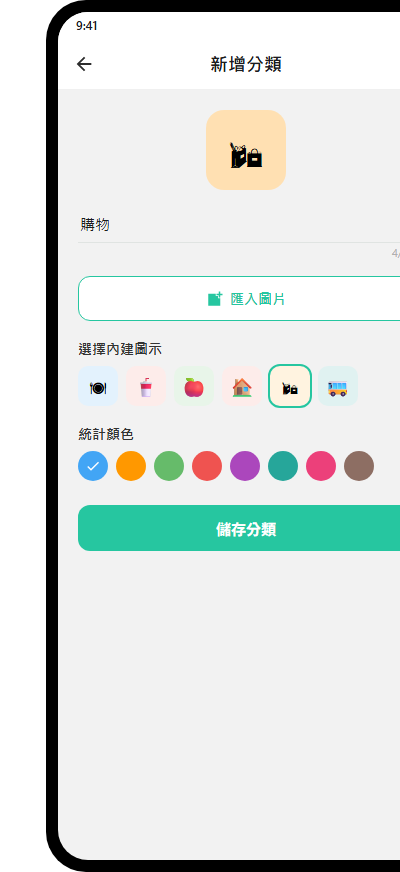
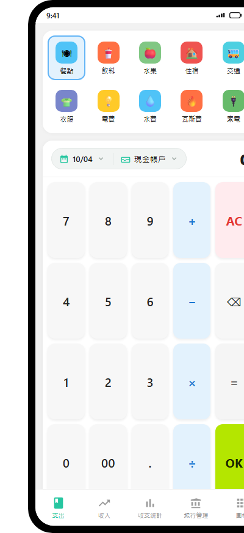
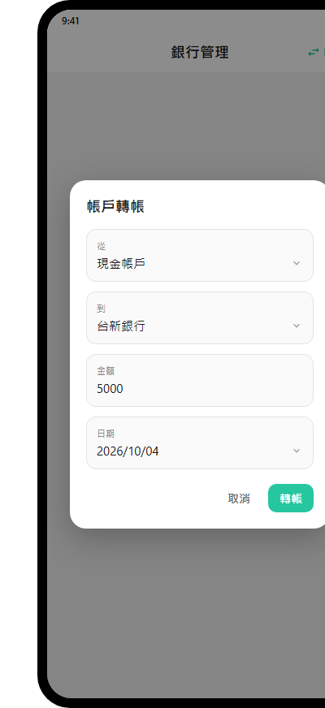
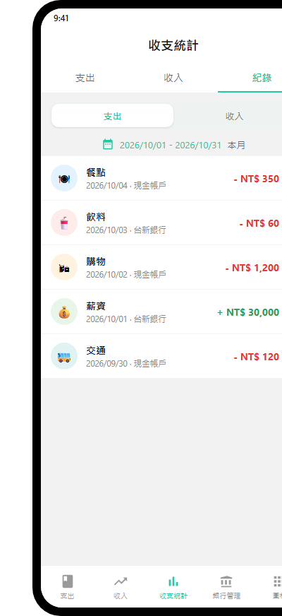
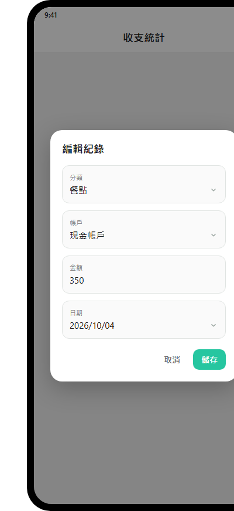

01
銀行管理：設定存款與銀行帳戶
在「銀行管理」頁可以新增／刪除帳戶、設定各帳戶的起始存款，並查看每個帳戶目前的餘額與交易明細。
1.1 進入銀行管理
點下方最右側（第四個）頁籤 「銀行管理」。

銀行管理主頁 · 資產總計卡片、帳戶清單與新增帳戶1.2 認識頁面
- 最上方為 「資產總計」 卡片：顯示所有帳戶合計的總資產、本月收支變動、帳戶數。
- 下方是帳戶清單，每個帳戶一張卡片，顯示 帳戶名稱、起始存款、目前餘額。
- 目前餘額 ＝ 起始存款 ＋ 收入 − 支出 ＋ 轉入 − 轉出。
1.3 新增銀行帳戶
- 捲到最下方「新增帳戶」卡片。
- 在「銀行／帳戶名稱」欄位輸入帳戶名稱（例如「台新銀行」「郵局」）。
- 點「新增並儲存」按鈕，帳戶即加入清單。
提示
點「新增並儲存」時，也會一併把你其他帳戶未儲存的修改存起來。1.4 設定存款（起始存款）
- 點任一帳戶卡片內的「起始存款」欄位，輸入金額後點「新增並儲存」。
- 帳戶名稱與起始存款會儲存；「目前餘額」會依照收入／支出／轉帳自動增減。
1.5 修改銀行帳戶名稱
直接點銀行帳戶卡片上的名稱欄位即可修改文字，再點「新增並儲存」。
1.6 刪除銀行帳戶
- 點該銀行卡片右上角的垃圾桶圖示。
- 系統會跳出確認視窗，點「刪除」即移除。
- 若此帳戶已有交易紀錄，會提示「既有紀錄仍會保留，但改以『付款方式』顯示」。
注意
「現金帳戶」是固定的，名稱無法修改、也不能刪除（會顯示一個小鎖頭圖示）。1.7 查看帳戶交易明細
- 點帳戶卡片下方的「查看交易明細 ›」（或點卡片標題列），進入該帳戶的明細頁。
- 明細頁顯示：目前餘額、起始存款，以及該帳戶的收支紀錄與轉帳（轉入顯示 +、轉出顯示 -），依日期排序。
- 明細頁內可透過每筆右側的選單（⋮）刪除該筆紀錄或轉帳。

帳戶明細頁 · 目前餘額、起始存款與收支／轉帳清單02
設定常用圖標
「圖標」頁用來管理支出／收入頁上顯示的分類圖示，可顯示／隱藏、排序、新增與編輯自訂分類。
2.1 進入圖標設定
點下方最後一個頁籤 「圖標」。

圖標設定頁 · 顯示／隱藏勾選與拖曳排序2.2 切換支出／收入分類
頁面上方有「支出圖標」與「收入圖標」兩個按鈕，點擊切換要管理的分類類型。
2.3 顯示／隱藏分類
每個分類左側有勾選框：打勾＝在支出／收入頁的圖示清單中顯示；取消勾選＝隱藏（統計仍會保留，只是不顯示在輸入頁）。
2.4 調整順序（常用放前面）
- 每個分類右側有拖曳把手（≡）。按住並上下拖曳即可調整順序。
- 建議把常用分類排在前面，輸入時更容易點到。
2.5 新增自訂分類
- 點「新增分類」按鈕。
- 在編輯頁：輸入分類名稱（最多 20 字）；點「匯入圖片」從電腦挑選圖片，或從下方「選擇內建圖示」挑一個內建圖示；在「統計顏色」挑一個顏色（用於統計圖與進度條）。
- 點「儲存分類」。
- 新分類會出現在「自訂分類」區塊，並自動加入支出／收入頁的圖示清單。

新增分類編輯頁 · 名稱、匯入圖片／內建圖示與統計顏色2.6 編輯／刪除自訂分類
- 點分類本身 → 進入編輯頁修改名稱／圖示／顏色。
- 點分類右側的 ⋮ 選單 → 選「編輯」或「刪除」。
說明
內建分類只能顯示／隱藏與排序，不能改名或刪除；自訂分類才能編輯與刪除。刪除分類後，既有紀錄與統計仍會保留。03
輸入支出與收入
支出與收入的輸入方式完全相同，差別只在分類與正負。
3.1 進入支出／收入
點下方 「支出」 頁籤輸入支出；點 「收入」 頁籤輸入收入。

支出／收入輸入頁 · 分類、日期／付款方式膠囊與計算機鍵盤3.2 選擇分類
- 畫面上方是分類圖示清單（即「圖標」頁設定顯示的分類）。
- 點一下要使用的分類（例如「餐點」），選中的分類會以藍色外框標示。
3.3 設定日期
- 點上方「日期」膠囊（顯示如 10/04，帶日曆圖示）。
- 在日期選擇器選好日期後按確定。
3.4 選擇付款方式（記入哪個帳戶）
- 點「付款方式」膠囊，從下拉清單選擇帳戶（現金帳戶、各銀行帳戶）。
- 若未選擇，預設會記入「現金帳戶」。
- 此帳戶會決定該筆收支影響哪個帳戶的餘額。
3.5 輸入金額（計算機鍵盤）
- 使用下方數字鍵盤輸入金額：數字鍵 0–9、00、小數點 .。
- 運算子 + − × ÷ 與 =：可以輸入算式，例如 100 + 50 = 會算出 150。
- AC＝全部清除、⌫＝退格、=＝計算。
- 金額顯示在最右側。
3.6 完成輸入
- 點右下角綠色的 OK 按鈕完成輸入。
- 會跳出「已記錄」的提示，這筆紀錄即加入，並同步更新所選帳戶的餘額與收支統計。
04
銀行轉帳功能
在多個帳戶之間移動金錢，例如從「現金」轉到「台新銀行」。
4.1 開啟轉帳
- 進入 「銀行管理」 頁籤。
- 點右上角的「轉帳」按鈕。
前提
至少要有兩個帳戶才能轉帳（現金帳戶 + 至少一個銀行帳戶）。4.2 填寫轉帳
- 從：選擇轉出的帳戶（金額由此帳戶扣減）。
- 到：選擇轉入的帳戶（金額加入此帳戶；系統會自動避免「從」與「到」相同）。
- 金額：輸入要轉帳的金額。
- 日期：可調整轉帳日期（預設今天）。
- 點「轉帳」完成。

帳戶轉帳對話框 · 從／到帳戶、金額與日期4.3 轉帳後的影響
- 轉出帳戶的「目前餘額」減少；轉入帳戶的「目前餘額」增加。
- 不會被計入收支統計的支出或收入（轉帳不屬於收支），因此不會影響「資產總計」與每月收支變動。
4.4 查看與刪除轉帳
- 進入任一帳戶的「查看交易明細」，會看到標示「轉入」或「轉出」的紀錄（例如 轉入 · 來自 現金帳戶）。
- 點該筆右側 ⋮ 選單 →「刪除轉帳」，可撤銷該筆轉帳（兩邊餘額會回復）。
05
收支編輯功能
5.1 進入紀錄清單
- 點下方 「收支統計」 頁籤。
- 點頁面頂部 「紀錄」 頁籤。

收支統計紀錄清單 · 支出／收入切換與每筆 ⋮ 選單5.2 篩選與瀏覽
- 可用「支出／收入」按鈕切換只看支出或收入。
- 可用上方日期範圍挑選，或點「本月」快速回到本月。
- 清單中每筆顯示：分類圖示、分類名稱、日期與所屬帳戶、金額（收入綠色 +、支出紅色 -）。
5.3 編輯紀錄
- 點該筆紀錄右側的 ⋮ 選單 → 選「編輯」。
- 在編輯對話框可修改：分類（支出／收入分類下拉）、帳戶（付款方式，改動會影響餘額歸屬）、金額、日期。
- 點「儲存」完成修改，統計與帳戶餘額會同步更新。

編輯紀錄對話框 · 修改分類、帳戶、金額與日期5.4 刪除紀錄
- 點該筆紀錄右側的 ⋮ 選單 → 選「刪除」。
- 跳出確認視窗後點「刪除」，該筆紀錄即移除，帳戶餘額與統計同步還原。
5.5 其他編輯入口
- 在「銀行管理 → 查看交易明細」的明細頁，也可對該帳戶的收支紀錄與轉帳進行刪除。
- 收支的完整編輯（分類、帳戶、金額、日期）以「收支統計 → 紀錄」為主要入口。
‧
小提醒
餘額自動計算
各帳戶的「目前餘額」會隨收支與轉帳自動增減，不需手動改（起始存款除外）。
資料自動儲存
新增／編輯／刪除收支、轉帳、帳戶，皆會自動儲存，重開 App 仍會保留。
現金帳戶固定
不可改名、不可刪除，用以確保永遠有至少一個付款方式。
轉帳不影響統計
帳戶間移轉金錢不會被當成收入或支出。